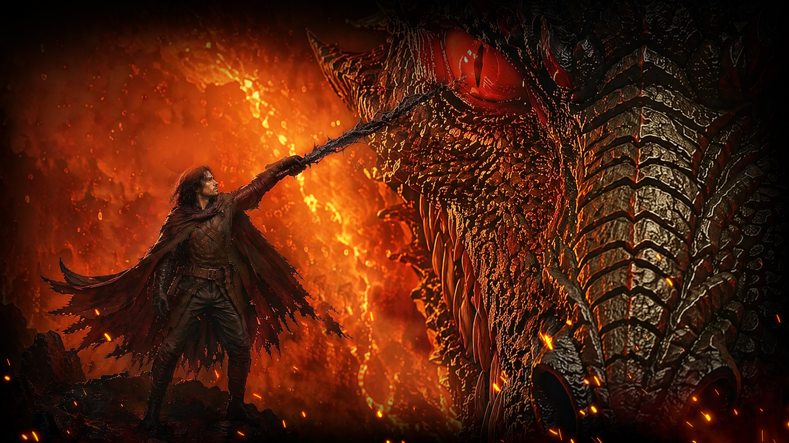

本期选映 / FEATURED王族弃子，屠龙问鼎
01 / 05
以想象开场，以影像讲述。
05 部短剧12 集精选中文成片 · 在线选看
01 / SELECTED WORKS
故事，从这里开始。
不同题材，同样的叙事热望。
点击海报，进入作品。
02 / EPISODE SELECTION
挑一集，入戏。
保留每个故事的原始集数，
随时切换，随心观看。
03 / ABOUT THE COLLECTION

01 / SELECTED WORKS
不同题材，同样的叙事热望。
点击海报，进入作品。
02 / EPISODE SELECTION
保留每个故事的原始集数，
随时切换，随心观看。
03 / ABOUT THE COLLECTION